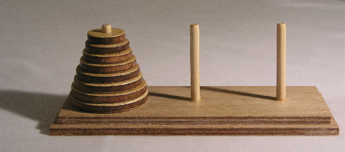

Problem 5: Towers of Hanoi (100pts)
Problem
A classic puzzle called the Towers of Hanoi is a game that consists of three rods, and a number of disks of different sizes which can slide onto any rod. The puzzle starts with
ndisks in a neat stack in ascending order of size on astartrod, the smallest at the top, forming a conical shape.
The objective of the puzzle is to move the entire stack to an
endrod, obeying the following rules:
- Only one disk may be moved at a time.
- Each move consists of taking the top (smallest) disk from one of the rods and sliding it onto another rod, on top of the other disks that may already be present on that rod.
- No disk may be placed on top of a smaller disk.
Complete the definition of
move_stack, which prints out the steps required to movendisks from thestartrod to theendrod without violating the rules. The providedprint_movefunction will print out the step to move a single disk from the givenoriginto the givendestination.
经典的汉诺塔谜题是一个由三根柱子和若干不同大小的圆盘组成的游戏，圆盘可以套在任意一根柱子上。谜题开始时，n 个圆盘按升序大小整齐地堆叠在 start 柱上，最小的圆盘在最上面，形成一个圆锥形。
谜题的目标是将整个圆盘堆移动到一个 end 柱上，并遵守以下规则：
- 一次只能移动一个圆盘。
- 每次移动都包括从一根柱子上取下最上面的（最小的）圆盘，并将其滑到另一根柱子上，放在该柱子上可能已有的其他圆盘的顶部。
- 任何圆盘都不得放在比它小的圆盘上面。
请完成 move_stack 的定义，它打印出将 n 个圆盘从 start 柱移动到 end 柱所需的步骤，同时不违反规则。提供的 print_move 函数将打印出将单个圆盘从给定的 origin 移动到给定的 destination 的步骤。
def print_move(origin, destination):
"""Print instructions to move a disk."""
print("Move the top disk from rod", origin, "to rod", destination)
def move_stack(n, start, end):
"""Print the moves required to move n disks on the start pole to the end
pole without violating the rules of Towers of Hanoi.
n -- number of disks
start -- a pole position, either 1, 2, or 3
end -- a pole position, either 1, 2, or 3
There are exactly three poles, and start and end must be different. Assume
that the start pole has at least n disks of increasing size, and the end
pole is either empty or has a top disk larger than the top n start disks.
>>> move_stack(1, 1, 3)
Move the top disk from rod 1 to rod 3
>>> move_stack(2, 1, 3)
Move the top disk from rod 1 to rod 2
Move the top disk from rod 1 to rod 3
Move the top disk from rod 2 to rod 3
>>> move_stack(3, 1, 3)
Move the top disk from rod 1 to rod 3
Move the top disk from rod 1 to rod 2
Move the top disk from rod 3 to rod 2
Move the top disk from rod 1 to rod 3
Move the top disk from rod 2 to rod 1
Move the top disk from rod 2 to rod 3
Move the top disk from rod 1 to rod 3
"""
assert 1 <= start <= 3 and 1 <= end <= 3 and start != end, "Bad start/end"
"*** YOUR CODE HERE ***"
Hints
- Hint1: Draw out a few games with various
non a piece of paper and try to find a pattern of disk movements that applies to anyn. In your solution, take the recursive leap of faith whenever you need to move any amount of disks less thannfrom one rod to another. If you need more help, see the following hints.- Hint2: See the animation of the Towers of Hanoi, found on Wikimedia by user Trixx
- Hint3: The strategy used in Towers of Hanoi is to move all but the bottom disc to the second peg, then moving the bottom disc to the third peg, then moving all but the second disc from the second to the third peg.
- Hint4: One thing you don't need to worry about is collecting all the steps.
{kind=link}
-
在一张纸上画出几个不同
n值的游戏，并尝试找出适用于任何n的圆盘移动模式。在你的解决方案中，每当你需要将少于n个圆盘从一根柱子移动到另一根柱子时，就进行递归的飞跃信念。如果你需要更多帮助，请参阅以下提示。 -
汉诺塔中使用的策略是：将除最底下的圆盘外的所有圆盘移动到第二根柱子，然后将最底下的圆盘移动到第三根柱子，接着将第二根柱子上除最底下的圆盘外的所有圆盘移动到第三根柱子。
-
你不需要担心收集所有的步骤。只要你确保移动的顺序是正确的，
print就可以有效地在终端中“收集”所有结果。
Solutions
要将 \(n\) 个圆盘从 \(A\) 柱移动到 \(C\) 柱（借助 \(B\) 柱），我们可以将其分解为三个递归的步骤：
- 移动上面的 \(n-1\) 个圆盘将顶部 \(n-1\) 个圆盘从起始柱 (start) 移动到辅助柱 (other)。此时，最底下的第 \(n\) 个大圆盘留在起始柱上不动。
- 移动第 \(n\) 个圆盘将最大的第 \(n\) 个圆盘从起始柱 (start) 直接移动到目标柱 (end)。
- 移动上面的 \(n-1\) 个圆盘将步骤 1 中移到辅助柱上的 \(n-1\) 个圆盘，从辅助柱 (other) 移动到目标柱 (end)。通过不断递归地应用这个策略，直到只剩一个圆盘（\(n=1\)）时，直接执行移动操作，问题就解决了。
由于柱子的编号为 \(1, 2, 3\)，我们便得到：\(start + end + other = 6\)
def move_stack(n, start, end):
assert 1 <= start <= 3 and 1 <= end <= 3 and start != end, "Bad start/end"
# base case: 当只剩一个圆盘时，直接执行移动操作并打印步骤。
if n == 1:
print(f"Move the top disk from rod {start} to rod {end}")
else:
# 计算出第三个柱子（辅助柱）的编号
other = 6 - start - end
# 1. 将 n-1 个圆盘从起始柱 (start) 移动到辅助柱 (other)
# 此时，最大的第 n 个圆盘留在 start 柱。
move_stack(n - 1, start, other)
# 2. 将最大的第 n 个圆盘从起始柱 (start) 移动到目标柱 (end)
move_stack(1, start, end)
# 3. 将 n-1 个圆盘从辅助柱 (other) 移动到目标柱 (end)
move_stack(n - 1, other, end)